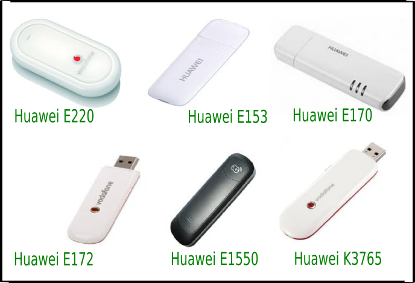

Hal yang perlu disiapkan
Untuk membangun server pulsa dengan software OtomaX perlu disiapkan beberapa hal:
Komputer
Kebutuhan minimum Komputer:
- Sistem Operasi:
Windows 2000 SP4, Windows Server 2003, Windows Server 2008, Windows Server 2012, Windows Vista, Windows XP (disarankan XP3), Windows 7 (disarankan SP1), Windows 8, Windows 8.1, Windows 10, Windows Server 2016. - Prosesor:
Intel Pentium III 600 MHz. Disarankan Dual Core atau lebih tinggi. - RAM minimal:
1 GB. Disarankan 2 GB atau lebih besar.
Catatan: Untuk Sistem Operasi kami rekomendasikan menggunakan Windows 7 SP1.
HandPhone atau Modem
HandPhone atau Modem yang didukung Software OtomaX antara lain:

Keterangan:
- Siemens C55
- Siemens M55
- Nokia 6235, 2865
- Wavecom Simbox 8 Port
- Wavecom Simbox 16 port
- Wavecom Single M1306B
- Wavecom Single CDMA (Q2438F)
- Kabel data merk BlueTECH untuk HP Siemens C55 dan M55
- Kabel data merk Pincote untuk HP Siemens C55 dan M55
- Kabel data A70 untuk Nokia 6235
Beberapa Modem Stik juga didukung OtomaX, contoh: Huawei E220, E153, E170, E172, E1550, K3765, K37770.

Catatan: Untuk menjalankan Software OtomaX Anda hanya perlu menyiapkan salah satu tipe dari HandPhone atau Modem di atas (TIDAK SEMUANYA HARUS DISIAPKAN), misalnya: HandPhone Siemens C55 saja, Modem Wavecome Single M1306B saja.
SIM Card
SIM Card diperlukan untuk dijadikan Dongle OtomaX. Dapat berupa SIM Card (kartu) Telkomsel, XL, Indosat dan lain - lain. Pastikan kondisi fisik chip dalam keadaan baik luar dalam. Hanya diperlukan 1 buah SIM Card.
Sebagai infomasi, SIM Card Dongle OtomaX akan dipasang terus - menerus pada modem yang terhubung dengan Komputer.
Software
Untuk menginstall Software OtomaX diperlukan Software Pendukung, yakni: Microsoft SQL Server Express dan Microsoft SQL Server Management Studio Express. Selain itu juga dibutuhkan Driver HandPhone atau Modem sesuai yang dipakai (biasanya disertakan dalam CD saat pembelian). Dan terakhir Software OtomaX itu sendiri. Untuk Software OtomaX Anda dapat menggunakan OtomaX Free Edition.
Software - software di atas dapat Anda download disini. Silahkan download sesuai petunjuk yang ada.